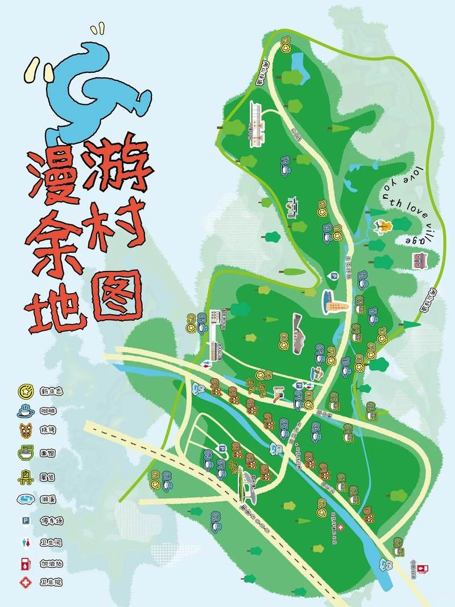

让青年与乡村，在这里相遇SCROLL TO EXPLORE ↓
怎么安排 02 / GUIDE到现场
怎么找到 03 / DISCOVER认识青来集
在做什么
WELCOME TO QINGLAIJI 001
来余村，
一起做点新的。
青来集把创业、共创、研学和在村生活放到同一张桌上。今天的导览，从认识人和场景开始。
探索青来集的 8 个方向THE DAY 002
大会日程.
从入场到交流，
按自己的节奏参与。
以上为页面演示日程，正式场次、时间和地点待大会资料替换。
FIND YOUR WAY 003
来到现场.
先找到青来集，
再跟着当天的动线走。

余村 / YUCUNYOUR DESTINATION
场地节点为演示动线；现场楼层与入口请以正式指引为准。
BEYOND THE EVENT 004
认识青来集.
从一场大会出发，
看见长期发生的事。